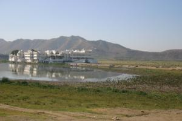
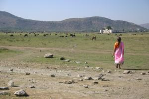

Le 19 décembre 2004,
 Apres avoir etes cloues au lit pendant trois jours en raison d’une infection intestinale carabinee, nous sommes enfin dans notre assiette. Heureusement, nous sommes installes dans un hotel tres calme, conseille par notre amie Gaelle. Risvan, le gerant de l’hotel a ete aux petits soins avec nous : il a appele le docteur (egalement charmant) pour nous et est meme alle personnellement cherche les medicaments pour nous a la pharmacie. Apres une rapide analyse, la cause du mal serait un encas achete a un marchand ambulant dans une gare ... Nous avons compris la lecon : on ne nous y reprendra pas !
 Encore un peu ballones, nous decidons de sortir nous ballader, ne pouvant plus voir notre chambre en peinture. Apres un bref apercu du City Palace de l’exterieur, n’ayant ni l’envie, ni l’energie de nous farcir son musee, nous nous dirigeons vers le lac Pichola, repute pour son Lake Palace, ancien palais d’ete du maharana Jagat Singh II, transforme en hotel qui trone sur l’ile Jagniwas. Malheureusement, ce lac est presque totalement asseche depuis sept ans. Risvan nous apprend qu’un projet de reapprovisionnement en eau est en cours : il consiste a pomper de l’eau dans un grand lac beaucoup plus profond et a l’acheminer par canalisations. Tout ca pour le tourisme ! En attendant, nous pouvons aller jusqu’qu Lake Palace a pied et profiter d’une promenade calme et merveilleuse pour les yeux.
Un peu fatigue, je rentre seul a l’hotel pendant qu’Eve-Laure va visiter une gallerie de cristal, un truc de fille ... En chemin, je suis alpague par un commercant qui maitrise etonnamment bien le francais. Apres quelques minutes, il comprend que je ne lui acheterai aucune babiole. Il me propose juste de discuter pour entretenir son francais. Comme il m’est sympathique, j’accepte et reste dans sa boutique une bonne demi-heure.
J’aborde encore une fois mon sujet favori en Inde : le mariage. Mon hote n’est pas encore marie et je lui demande si sa famille est en cours de prospection pour lui trouver une epouse. Il me repond que le jour ou il se mariera, ce sera avec la femme qu’il aime et qu’il aura choisi personnellement. Il en a informe ses parents qui on compris, d’apres lui. Il ajoute : "L’Inde va changer, tu verras !".
Je rentre me reposer a l’hotel. Eve-Laure me rejoint et ne raconte qu’a sa grande surprise, mon commercant lui a lance dans la rue : "J’ai vu votre ami. Alors, comment ca vous faites le tour du monde ?" Il l’avait reconnue rien qu’a la photo d’identite que je lui avait montree. Normal, une beaute nordique comme Eve-Laure ne passe pas inapercue en Inde !
Michaël
{kind=link}
{kind=link}